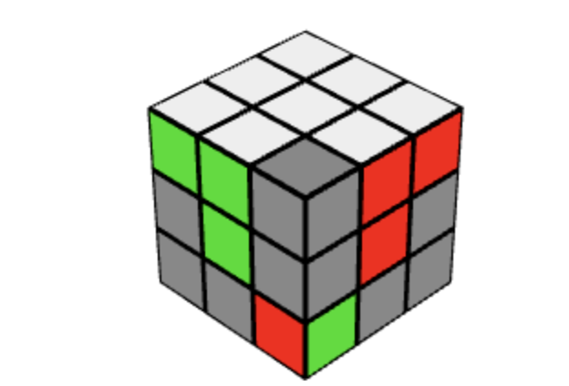

Up Face
Down Face

Right Face
Left Face
Front Face
Back Face
We will teach you the layer by layer method, which is the easiest method to learn
You can then apply some faster algorithms such as CFOP or Roux
Learning algorithms may seem hard but keep trying and they will soon become second nature
Algorithms will be shown in big blue text like this
Algorithms are simple and easy to memorise in a few days
With each diagram they only show 1 side of the cube but you can apply the algorithms to any colour by just rotating your cube
You should aim to fully master 1 layer before moving on to the next layer
The 3 by 3 rubiks cube consists of 6 faces with 8 corner pieces and 12 edge pieces
An edge piece is where two colours meet except on corners
For this guide we will be starting with the white layer
When solving the Rubiks cube there are 3 layers
Top Layer
Middle Layer
Bottom Layer
When solving the Rubiks cube there are 6 faces
Up Face
Down Face
Right Face
Left Face
Front Face
Back Face
There are 12 moves which make up algorithms
A letter means that you must rotate that face 90° clockwise
A letter with ' after it means rotate that face 90° anticlockwise
Here are the 12 moves to memorise

Step 1 is to make the white cross
The goal is to have a white cross with each colour matching with the center piece on each face, as shown in the image below
Solving the white cross is quite intuitive but there are a few algorithms that will speed things up
These algorithms are not necessary but will only improve your time
F U' R U
F' U' R U
U' R U
U L' U'
It is often easire to get a piece into the bottom layer and then rotate it until it is under the correct position and then move the front face clockwise 180°
If you have the white cross solved but some of the pieces are not in the correct position, there are 2 algorithms you can apply depending on your case
If 3 or more pieces are in the wrong place then you will most likely need to use more than 1 algorithm
If the 2 pieces that need swaping are adjacent to each other, position the pieces so that they are on the front and left face and then and apply this algorithm
F2 D' L2 D F2
If the 2 pieces that need swapping are opposite each other apply this algorithm
F2 D2 B2 D2 F2
Make sure the colours adjacent to the white edge must match the center piece colour
The next step is to solve the white corners
The aim is to match the colours so the you make a T shape of one colour and then repeat for all sides
This is quite easy and intuitive and doesnt really require any algorithms
But here are some algorithms just to speed you up
You may not see each case straight away, so you may have to move the U or D face untill you see one of the cases
R' D' R
F D F'
R' D2' R D R' D' R
L D L' R' D' R
Repeat this until every colour has made a T shape
The next step is to fill in the edge pieces
The aim is to place the edge piece on the yellow face into its correct position on the front face
You need to flip the cube so that the yellow face is on the top
Choose a front face and rotate the U face until you make a vertical line matching one of the pictures below
If you are unable to make any of the pictures above then you need to apply one of the algorithms below to get the edge piece out
Once the edge piece is out you must find the correct place for the edge pice to go and then apply one of of the following algorithms
Depending on wheather the edge piece needs to go to the left or right of the center piece decides which algorithm you will use
Left
U' L' U L U F U' F'
Right
U R U' R' U' F' U F
If there are no more edge pieces and the layer is not completed then you either have 1 piece flipped or inserted in to the wrong place
To unflip a piece you must use one of the algoirithms to insert a yellow piece into the slot, which will move the piece to the top layer, and then re-insert the piece correctly in
The next step is to solve the yellow cross
For this there are 4 cases but only 1 algorithm to learn
F R U R' U' F'
Dot Case
Backwards L Case
Line Case
Cross Solved
If we have the dot case we apply the algorithm 3 times
If we have the Backwards L case we apply the algorithm 2 times
If we have the Line case we apply the algorithm 1 time
If we have the Cross we are done
Now we must fix the centers of the yellow cross
To do this we only need to learn 1 algoritm
R U R' U R U2 R' U
The algorithm above swaps the front and left centers of the yellow face
Some times you will need to swap 2 opposite faces. To do this you must perform the algorithm once and then rotate until the two corners are in the left and front positions the cube and perform the algorithm again
Now we must position the last layer corners into the right places
To do this we must apply 1 algorirthm
U R U' L' U R' U' L
When we apply the algorithm above the corner on the bottom right must be of the correct colours but rotated wrong
The corner on the bottom left moves up to the top right and the corner on the top right moves to the top left
You may need to only apply this algorithm once or twice
Finaly we must orientate the last layer corners
This step can be really confusing so pay close atention
What we have above is a cube with the corners not orientated
To orientate the coreners we only need to learn 1 algorithm
R' D' R D
Start with an unorientated corner on the front right side
So in our case we have a blue and orange piece that needs to be rotated
Do the algorithm until that piece is correctly orientated
Then turn the U face clockwise so that another unorientated piece is in the front right slot
keep doing the algortihm and then rotating the top face unitl the cube is solved
Dont worry the cube will look messed up until you have rotated all the corners correctly
Now you know how to solve a 3 by 3 Ruiks Cube, all you need to do is to memorise each algorithm